AED · curso 2
5. Grafos I
Escrito por Adrián Quiroga Linares.
5.1 Grafos I
Los grafos son estructuras de datos que representan relaciones arbitrarias entre objetos, a diferencia de los árboles que suelen reflejar jerarquías. Un grafo está compuesto por:
- Vértices o nodos (V): Son los puntos que representan los objetos.
- Arcos o aristas (A): Conjunto de conexiones entre pares de nodos.
Tipos de grafos
- Grafo dirigido (dígrafo): Los arcos tienen una dirección, conectando un nodo de origen con otro de destino, pero no necesariamente en sentido inverso.
- Grafo no dirigido: Los arcos son bidireccionales, conectando dos nodos de manera simétrica.
- Grafo valorado: Los arcos tienen un peso asociado, que podría representar una distancia, coste, o cualquier otro valor.
Propiedades importantes
- Nodos adyacentes: En un grafo no dirigido, dos nodos son adyacentes si están conectados por un arco. En un grafo dirigido, solo el primer nodo es adyacente del segundo.
- Grado de un nodo: Número de arcos que inciden en un nodo. En dígrafos, se distingue entre grado entrante (arcos que llegan al nodo) y grado saliente (arcos que parten del nodo).
- Camino: Secuencia de nodos conectados por arcos. Un camino tiene una longitud que se define como el número de arcos que lo componen.
- Bucle: Arco que conecta un nodo consigo mismo.
- Grafo conexo: Grafo donde existe un camino entre cualquier par de nodos.
- Fuertemente conexo: En dígrafos, si existe un camino en ambas direcciones entre cualquier par de nodos.
- Grafo completo: Grafo en el que existe un arco entre cada par de nodos.
Aplicaciones de los grafos
Los grafos tienen muchas aplicaciones prácticas, como:
- Redes de alcantarillado.
- Redes de comunicaciones.
- Circuitos eléctricos.
- Diagramas de flujo de algoritmos.
5.2 Representación de Grafos
Los grafos se pueden representar de diferentes maneras, dependiendo de la operación a realizar:
Matriz de adyacencia
- Es una matriz cuadrada de tamaño
, donde es el número de nodos. - Cada posición
en la matriz indica si existe un arco entre los nodos y (1 si existe, 0 si no). - En grafos no dirigidos, la matriz es simétrica. En los dígrafos, no necesariamente.
- En grafos valorados, los elementos de la matriz representan el peso del arco.
Ventajas:
- Muy eficiente para obtener el coste o peso asociado a un arco.
- Comprobación de adyacencia entre dos nodos es directa.
Desventajas:
- No permite eliminar nodos fácilmente, ya que implicaría modificar toda la matriz.
- Poco eficiente en grafos dispersos, ya que muchas posiciones estarán llenas de ceros.
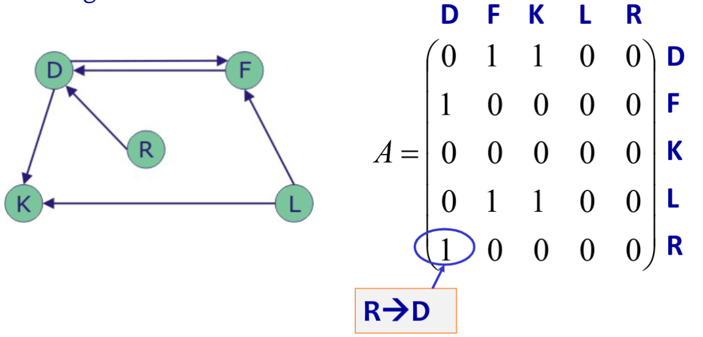
Lista de adyacencia
- Cada nodo tiene asociada una lista enlazada que contiene los nodos con los que es adyacente.
Ventajas:
- Ocupa menos espacio en memoria para grafos con pocos arcos.
Desventajas:
- Más compleja de manejar por el uso de punteros.
- Ineficiente para encontrar todos los arcos que llegan a un nodo.
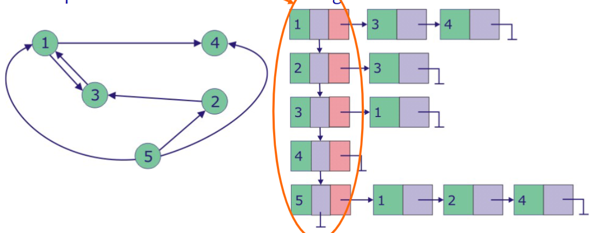
5.3 Recorridos en Grafos
Recorrido en anchura (BFS - Breadth-First Search)
- Se comienza desde un nodo y se visitan todos sus nodos adyacentes. Luego se continúa con los adyacentes de esos nodos, y así sucesivamente.
- Utiliza una cola para almacenar los nodos a visitar.
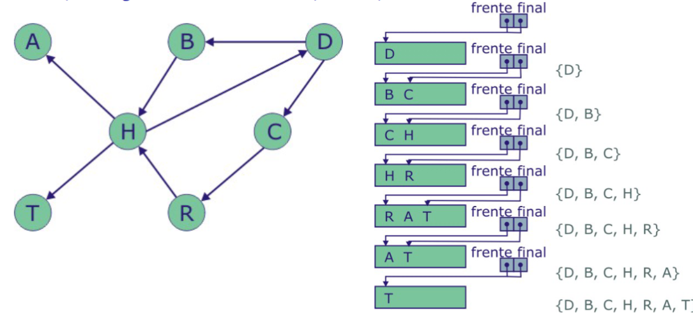
Recorrido en profundidad (DFS - Depth-First Search)
- A partir de un nodo, se recorre cada vértice adyacente hasta no encontrar más nodos no visitados.
- Puede implementarse de manera recursiva o utilizando una pila como estructura auxiliar.
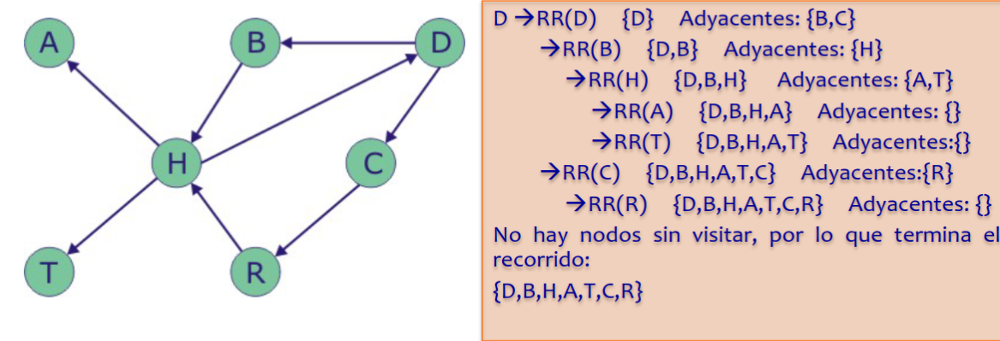
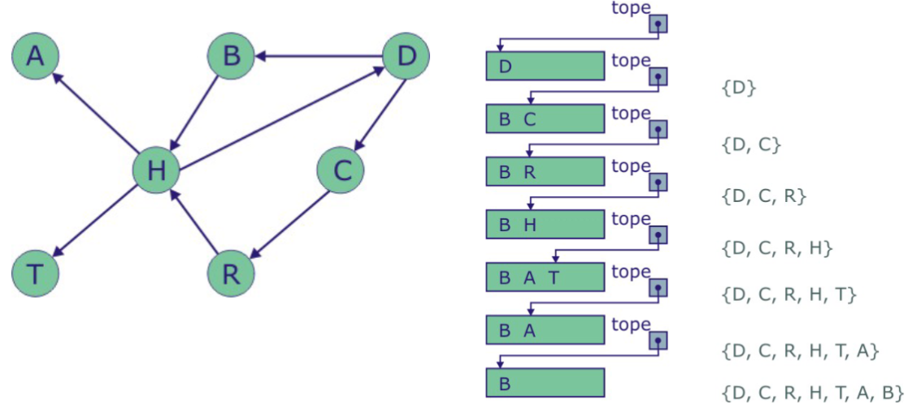
5.4 Componentes conexas
Componentes conexas en un grafo no dirigido
- Se realiza un recorrido desde cualquier vértice, almacenando los nodos visitados.
- Si todos los vértices fueron visitados, el grafo es conexo.
- Si no, los vértices visitados forman una componente conexa. Se repite el proceso con un vértice no visitado.
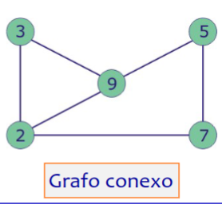
Componentes fuertemente conexas en un dígrafo
- Se obtiene el conjunto de descendientes de un nodo.
- Se obtiene el conjunto de sus ascendientes.
- Si la intersección de ambos conjuntos incluye todos los nodos, el dígrafo es fuertemente conexo.
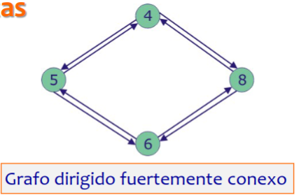
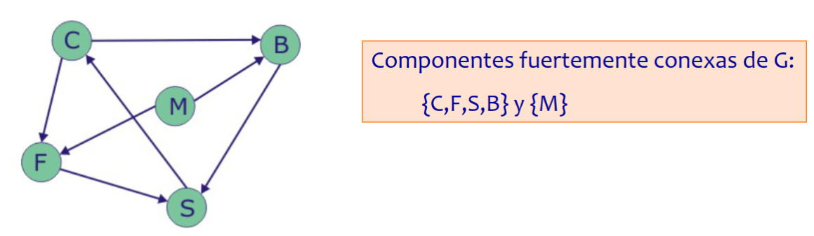
## Matriz de caminos - Se obtiene multiplicando la matriz de adyacencia por sí misma repetidamente. La matriz resultante indica la existencia de caminos de diferente longitud entre nodos.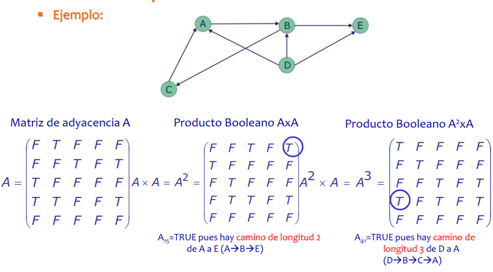
- En un grafo fuertemente conexo, todas las entradas de la matriz de caminos tienen un 1 excepto la diagonal principal.5.5 Puntos de articulación
Un punto de articulación es un nodo que, si se elimina junto con sus arcos, divide una componente conexa en dos o más componentes.
Algoritmo para encontrar puntos de articulación
- Se realiza un recorrido en profundidad, numerando los nodos.
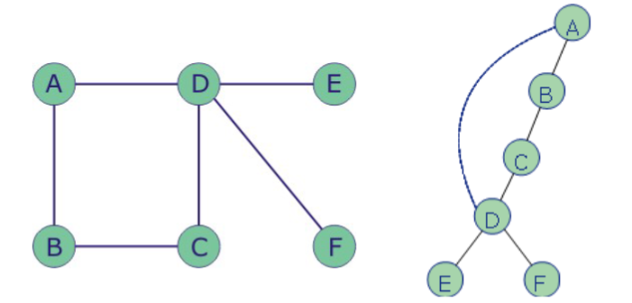
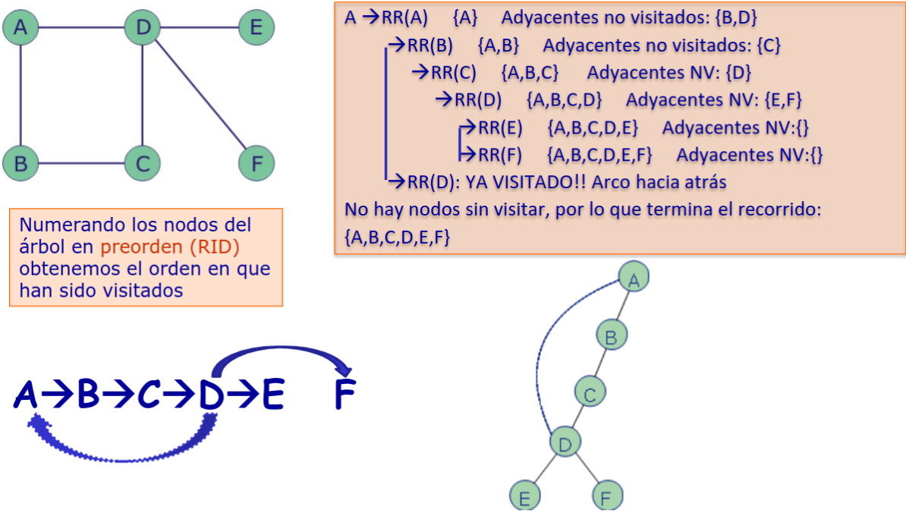
- Para cada nodo
, se calcula , que es el mínimo de: - Su número
. - El menor número de los vértices alcanzados por aristas hacia atrás.
- El menor valor de
entre sus descendientes. 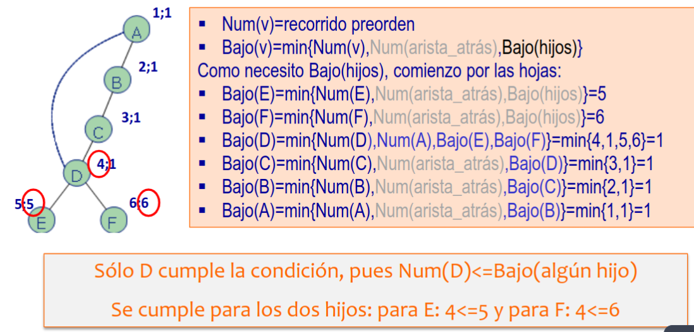
- Su número
- Un nodo es punto de articulación si:
- Es la raíz del recorrido y tiene al menos dos hijos.
- Tiene un hijo
tal que .
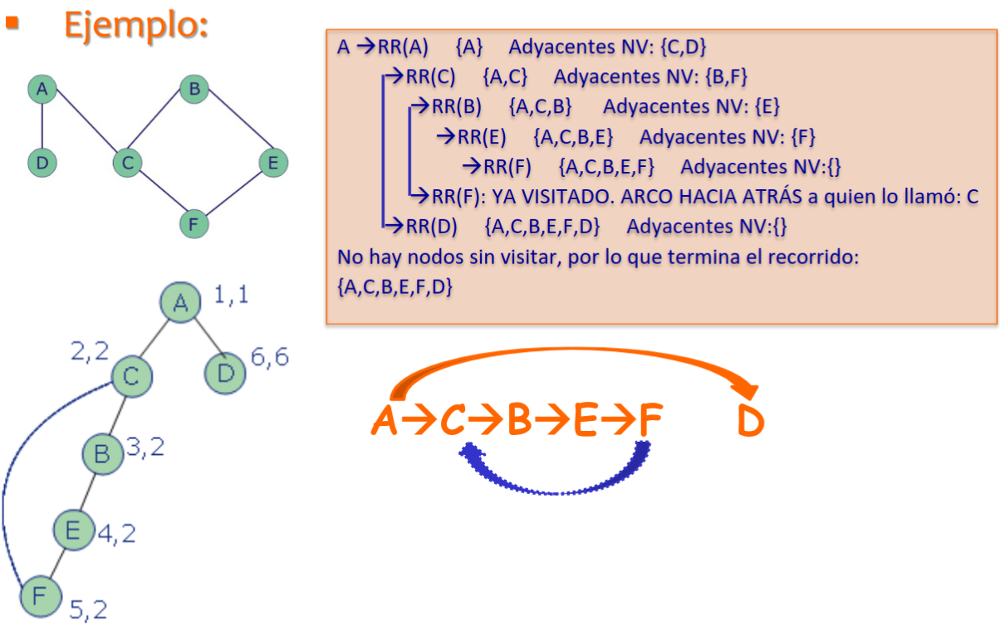
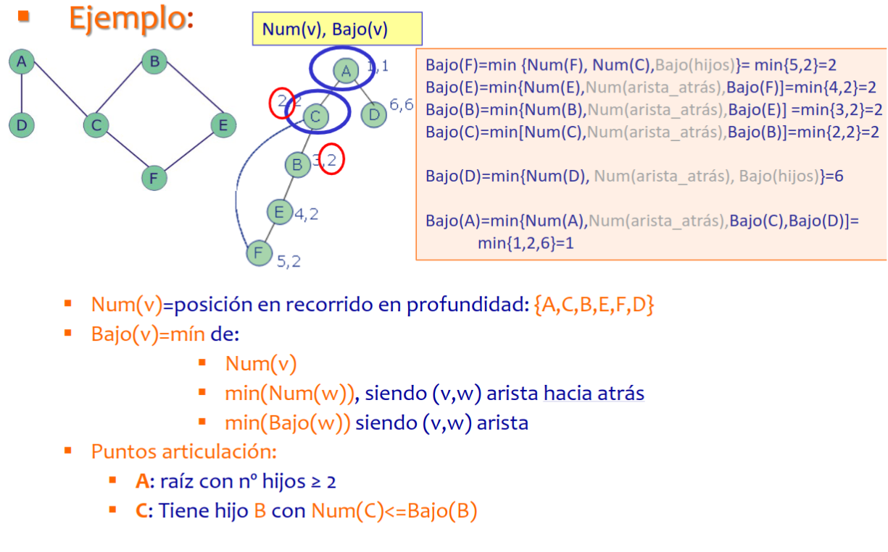